Personal Journal
Dibyajyotee Ghosh
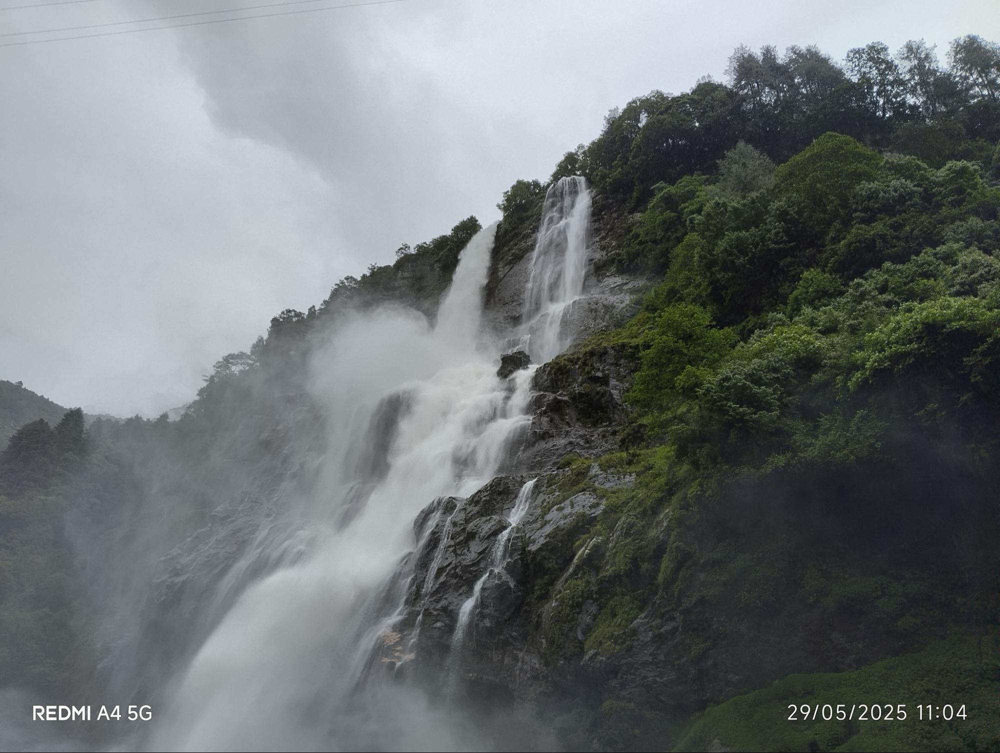
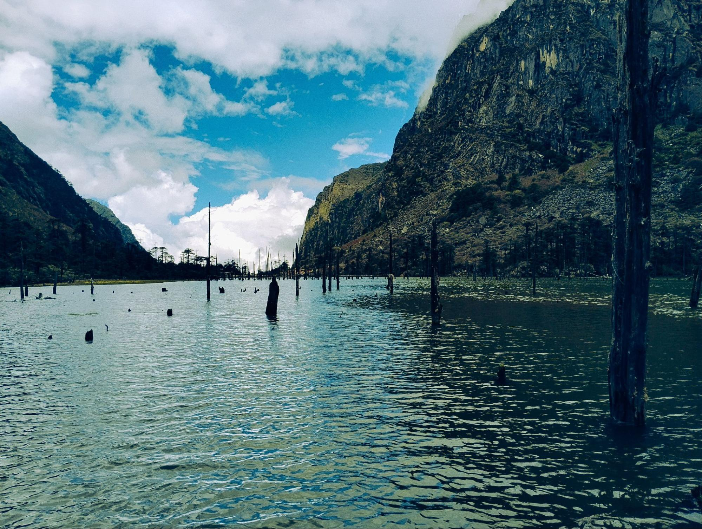
This waterfall feels like the embodiment of raw, unrestrained energy — rushing forward, carving its path, never hesitating. There's something both calming and powerful about watching water in motion; it doesn't fight its course, yet it reshapes the land beneath it.


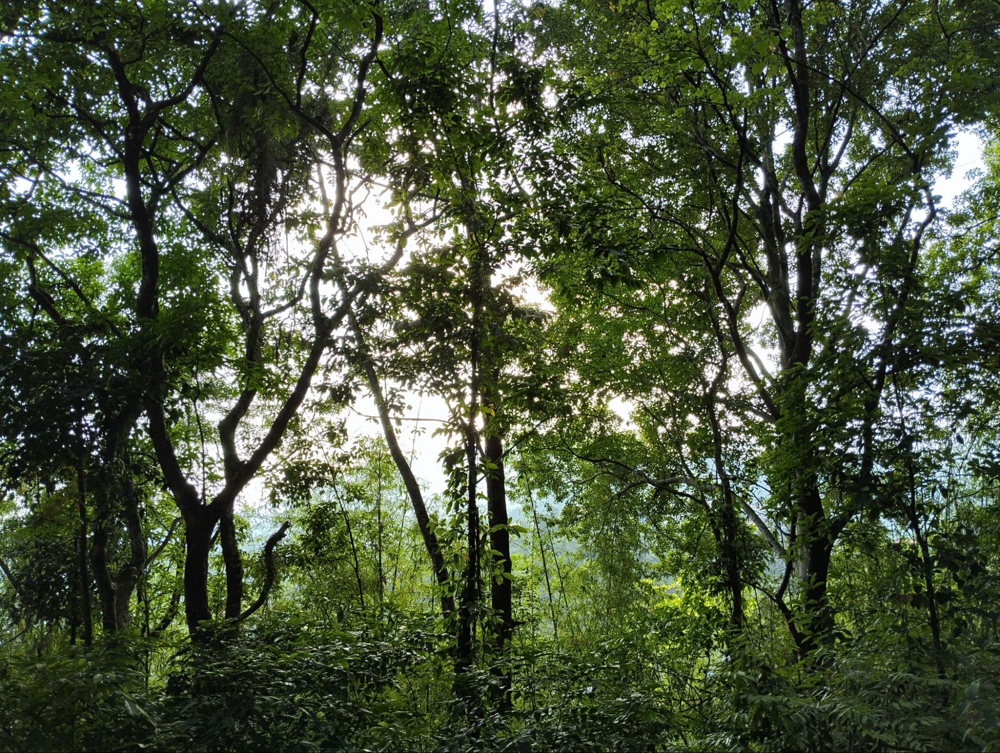
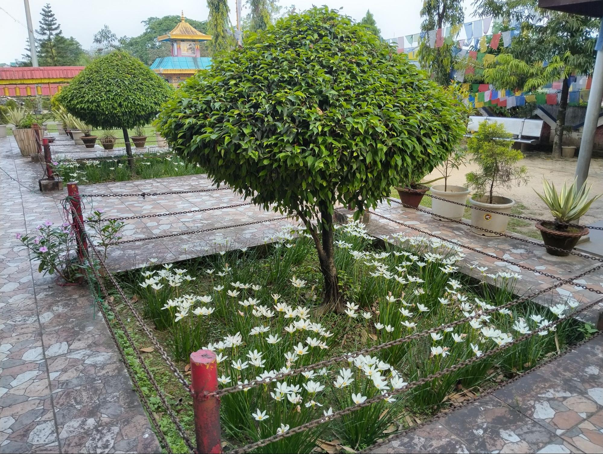
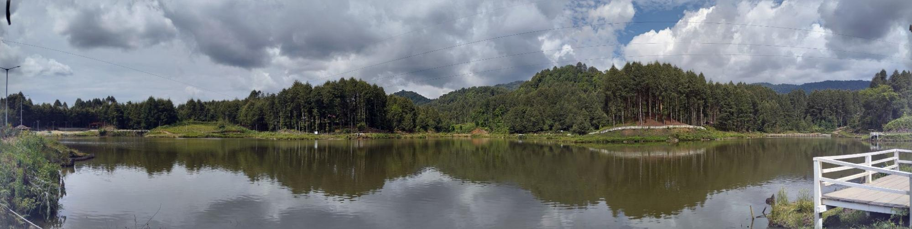
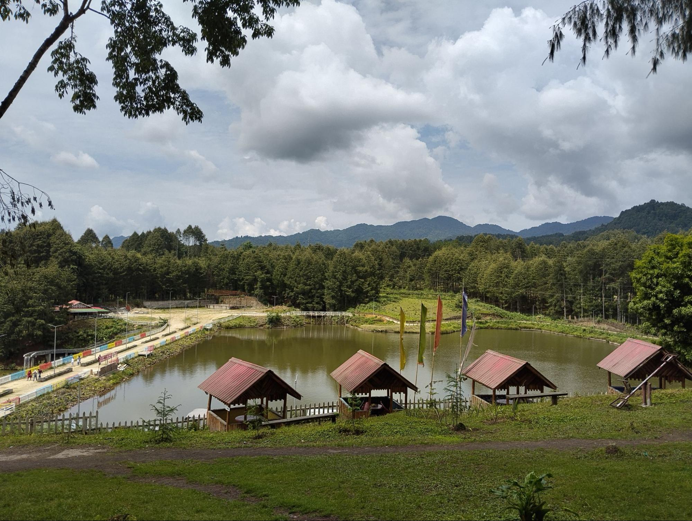
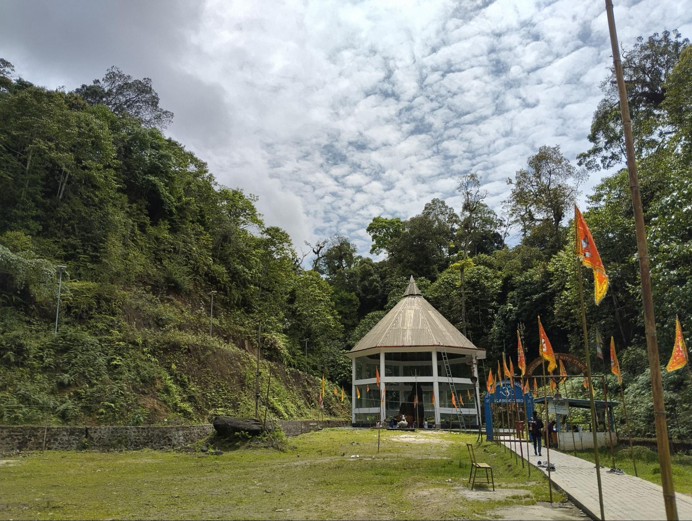
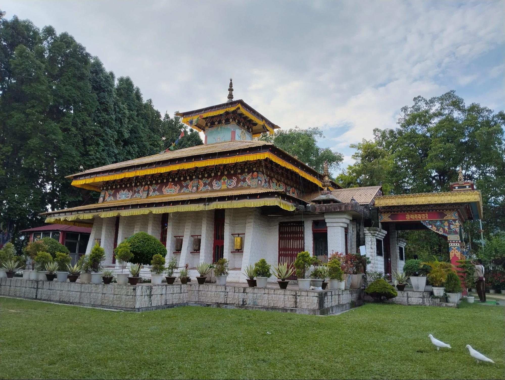


"If you look closely at the things I pour my time into, it’s a beautifully chaotic mix. I like that I don't just fit into one box. One night I'm building local AI models and testing hardware sensors, and the next I'm trying to capture the exact cinematic vibe of a mountain lake or climbing the ranks in Brawl Stars. I'm managing administrative headaches for my dad, looking out for Prisha, Pookie, Evie and still finding time to optimize game engines. Building this journal is like finally putting all those pieces in one room. It’s a digital mirror of the engineer, the son, the brother, and the gamer—silently holding the context of my chaos so I can just breathe and keep building."
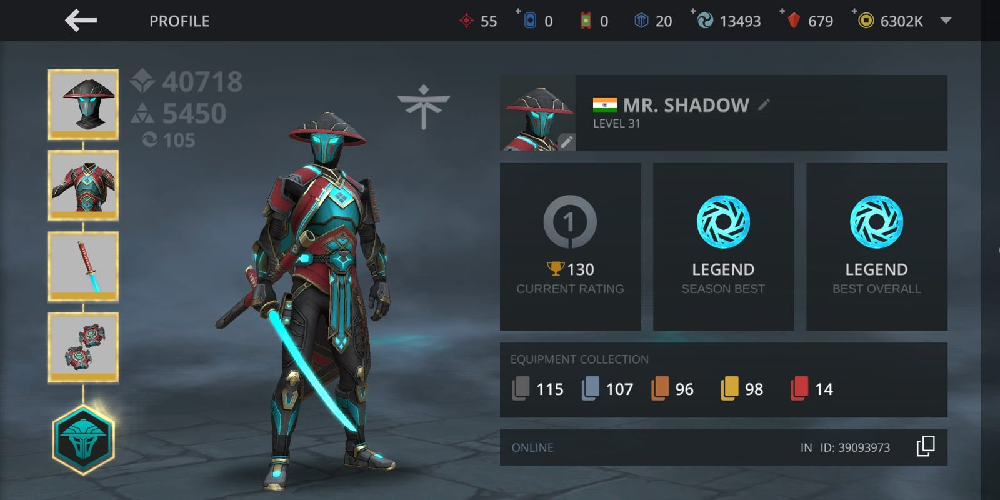
MR. SHADOW
Level 31 · ID: 39093973
Grateful for the late nights, the grinding, the victories — and every season that pushed me to level up. A perfect digital sanctuary away from the circuits and textbooks.
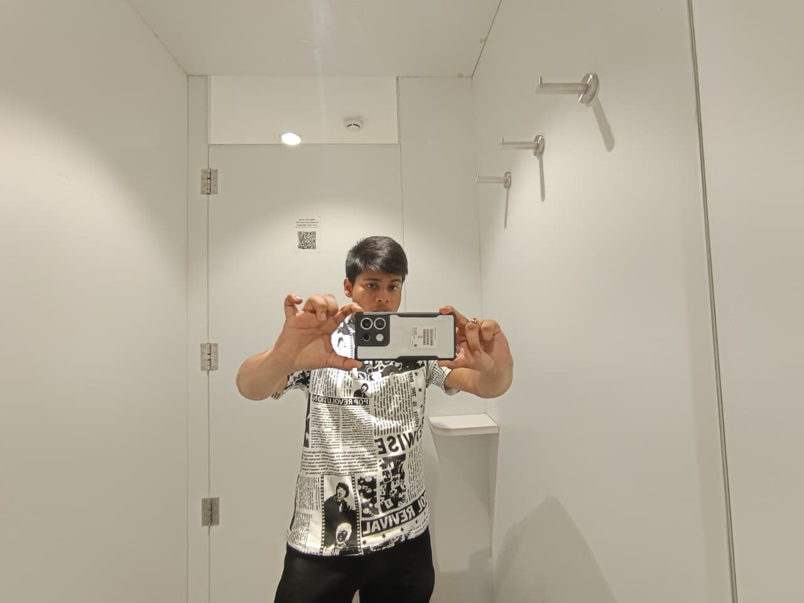
You're someone whose heart is tied to the people and places that give life meaning. The way you find joy in cricket and love in biriyani shows how simple things can hold the deepest happiness.
Life becomes beautiful when we learn to hold close to what truly matters — love, home, small joys, and the freedom to be ourselves.
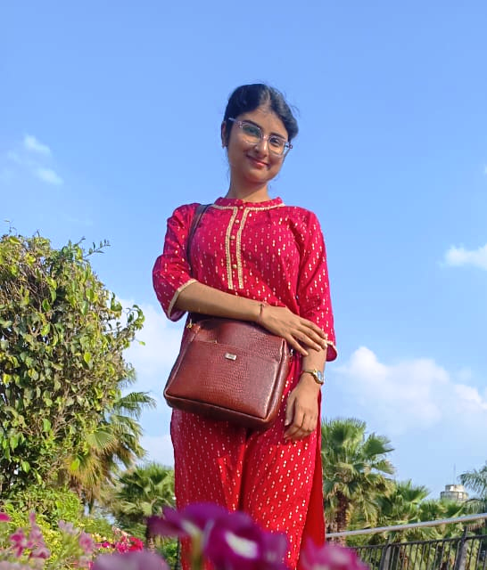
You are my pookie and my bbg ✨ — playful, warm, a little filmy, a little dreamy… and completely impossible to replace.
You feel like a canvas painted in contrasts — the fire of red, the mystery of black, the elegance of Paris, and the soul of an artist who turns emotion into art.
The highest form of sophistication
Take nothing personally · protect inner peace
Waterfalls, mountains, and everything in between